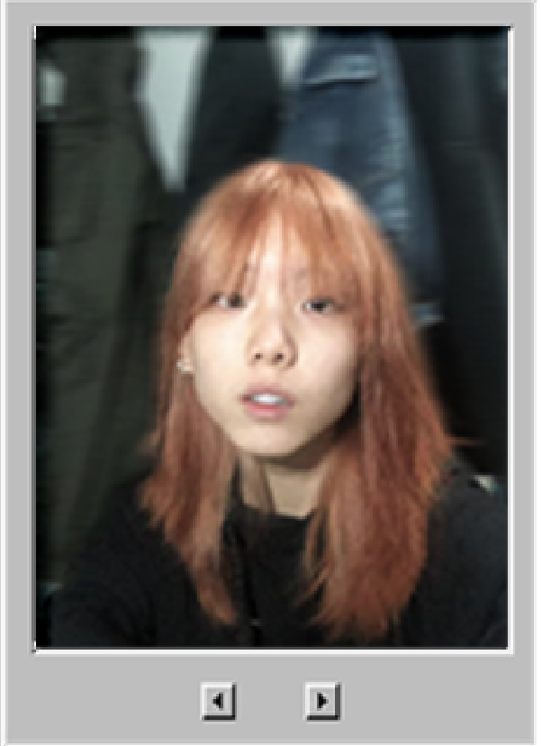

关卡策划实习生 · 中国美术学院 · 建筑艺术学院
| 姓名 | 梁好 |
| 出生年月 | 2005年2月 |
| 籍贯 | 福建省福州市 |
| 手机 | 19106531294 |
| 邮箱 | lianghao25724@qq.com |
| 求职意向 | 关卡策划实习生 / 立刻到岗 |

风景园林专业背景，拥有扎实的空间规划与动线推敲能力。熟练掌握从2D平面图纸到3D空间建模的推演转化，具备良好的建筑尺度感与视线引导直觉。热爱游戏关卡设计，致力于创造有叙事深度和探索乐趣的游戏空间。
2023.09 至今
建筑艺术学院 — 风景园林专业（学士）
绩点：4.1 / 5.0
| 英语 | CET-6（549分） |
| 德语 | 欧标 B1 |
关卡策划实习生
2026.06 — 至今
承担项目核心玩法模块的地图关卡设计，使用SketchUp和Unity搭建关卡白盒；基于玩法需求、空间尺度及玩家动线等约束完成地图布局与流程设计，产出规范关卡文档；历经3次评审迭代，确保关卡节奏符合预期。
对接地编、原画等职能跟进地图制作，拆解并提交制作需求；根据运营侧玩家反馈，完成问题复现与分类，协同研发修复关卡卡点、空气墙等Bug20+项，保障地图上线稳定性。
持续追踪行业趋势，完成3份独立游戏及商业大作的机制分析报告，提炼设计规律并用于项目关卡及相关设计决策。
逆水寒项目组 — 任务策划实习生
2026.03 — 2026.06
参与大世界区域氛围搭建，负责任务剧本的配置落地、NPC布设、道具与奖励投放，在具体执行层面落实设计预期。
使用可视化工具搭建副本，配置NPC对话镜头与剧情演出，调控副本内的事件触发逻辑。
独立配置并上线 10+ 独立任务，处理测试及线上反馈 200+ 条，跟进Bug修复与体验调优。
特稿实习生（远程）
2025.07 — 2025.11
独立负责社会议题的线索挖掘与选题申报，参与3篇深度报道的采访设计、内容采写，作品获栏目编辑采用并发布。
参与栏目新媒体内容建设，根据热点新闻，独立完成短视频脚本构思、素材剪辑与后期包装，产出新闻短视频10+条。
系统梳理复杂信源与背景材料，构建清晰叙事逻辑，能够将碎片信息转化为结构严谨、表达流畅的文档。
2026.05
在12人团队中独立承担3D恐怖氛围游戏的关卡设计，构建约20分钟游戏全流程白盒，通过空间语言引导玩家完成探索逻辑，实现核心玩法与节奏的初步落地。
▸ 去机核查看详情（微恐慎入）2026.04
独立完成白盒搭建与玩法原型设计。在3D场景中融合潜行、近战机制，围绕"非对称对抗"核心体验组织空间结构。加强剧情成分，通过场景线索与关卡节奏配合传递叙事信息。
2026.01 — 2026.02
独立在UE5中搭建的第三人称3D平台跳跃与解谜白盒关卡。包含从基础跳跃、攀爬到锁钥机制、动态机关的完整体验闭环。
偏好叙事驱动的空间探索体验，关注关卡节奏、场景叙事与交互密度。
您的意见和反馈对我来说非常宝贵。无论是针对个人站、简历、作品集……有什么想说的，都可以在这里留言。
认识我，快用POME来向我匿名发问！
本想做一套站内反馈系统，但静态网页承载不了，于是借用了第三方匿名提问箱。别担心，我看不到您的身份。如果愿意留下联系方式，我看到后会主动联系您。
https://www.pome.vip/d067d2c225扫码匿名提问
—— POME 匿名提问箱